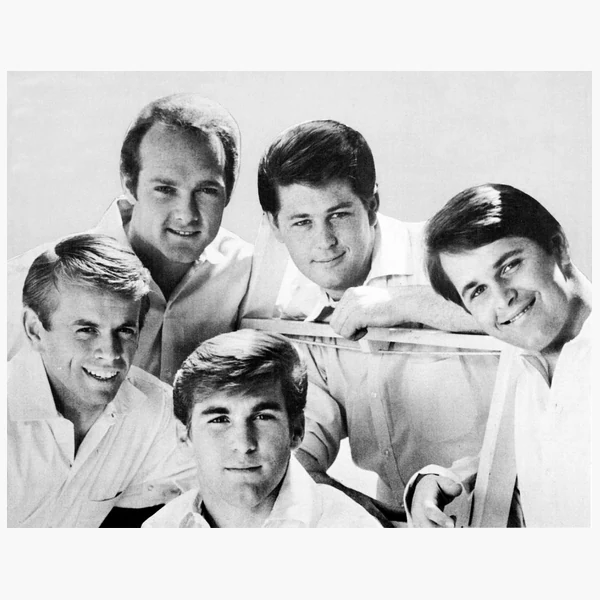

Pop is music made with a broad audience in mind, usually placing a clear melody and a memorable song at the centre of the experience. It is often associated with catchy choruses and polished production, but there is no single sound that every Pop recording has to follow. The genre borrows freely from whatever is happening elsewhere in music, which means its instruments and rhythms change with the times. A Pop song might be built around a band, a programmed beat or layers of studio recording that would be difficult to reproduce without some help from technology. What matters is how those elements support the song and reach the listener. Pop is closely tied to the commercial music business, though being designed for a wide audience does not automatically make a piece of music shallow. A simple sounding song can take a remarkable amount of work to get right. Whether the result is any good is a separate question, and one that sales figures are not especially good at answering.
Pop is simply a shortened form of popular music, although the two expressions do not mean quite the same thing anymore. Popular music was once a general description for music enjoyed by ordinary audiences rather than music associated with formal institutions. As recorded music and broadcasting expanded during the 20th century, that broad description became increasingly useful to an industry trying to reach as many listeners as possible. From the 1950s onward, Pop became associated with the growing youth market and the changing sounds of mainstream singles. The distinction between Pop and Rock became more noticeable later in the 1960s, when some Rock audiences began treating albums and artistic independence as signs of greater seriousness. Pop carried on being the name for music that was more openly concerned with immediate appeal. The boundary was never particularly convincing, since many musicians moved between the two without changing their ambitions very much. Genre labels are often neater than the music they are supposed to describe.
The roots of modern Pop lie in the commercial music world that developed before records became the main way people heard songs. Publishers and stage performers helped popularise new material, but radio and affordable recordings eventually allowed the same music to reach enormous audiences. During the 1950s, Rock and Roll and the growing teenage market changed what mainstream music sounded like and who it was being sold to. Recording studios became increasingly important during the 1960s, as producers found ways to create arrangements that went beyond a simple live performance. Pop continued drawing on Soul and Rock before Disco and electronic dance music helped reshape its rhythms. In the 1980s, synthesizers and music television made sound and visual presentation more closely connected. Digital recording later changed how songs were assembled, while the internet made international influences much easier to share. Streaming has since altered how music is discovered and promoted, sometimes rewarding songs that make an impression almost immediately. Pop keeps adapting because its audience, technology and business are all changing at once.
Pop usually gives listeners something recognisable to return to, often a strong melody or a repeated musical phrase known as a hook. A chorus may do much of that work, with verses building towards it, although not every Pop song follows the same arrangement. The lead voice is generally placed where it can be heard clearly, and the instruments are chosen to support it rather than compete for attention. Rhythm is important too, especially when a song is meant for dancing, but Pop can just as easily be slow and understated. Modern production allows sounds to be layered and edited with great precision, which can make a recording seem effortless even when considerable planning went into it. Pop also tends to favour a length and structure that suits broadcasting and everyday listening. None of these features is unique to the genre. Its identity comes from the way they are brought together to communicate a song as directly as possible, without requiring the audience to know much about the music beforehand.

Pop has helped shape how generations think about youth, identity and the freedom to express themselves. Its enormous reach means ideas about fashion and relationships can spread far beyond the places where they first emerged. Mainstream performers have sometimes challenged expectations around gender and sexuality in front of audiences that might never encounter those ideas elsewhere. Pop has also provided a public platform for cultural influences that traditional broadcasters and record companies once kept at the margins. But its history is tied just as closely to advertising, image making and the pressure to sell. The industry has often judged performers, particularly women, as much by their appearance as by their work. Meanwhile, music embraced by young audiences has regularly been dismissed as unserious, as though popularity were somehow evidence against musical value. The audience buying and listening to the music does not always get much say in what critics consider important. Pop can reflect social change and help push it forward, while still being shaped by the companies deciding what gets promoted in the first place.